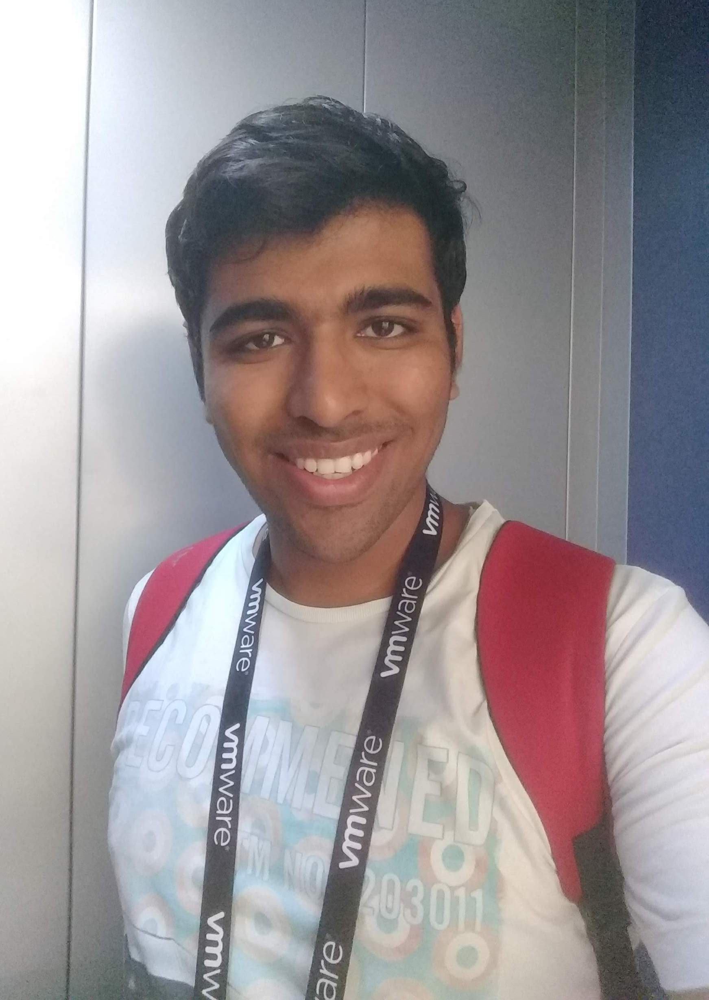

Raunak Singwi
Senior Software Engineer at Cloaked
Software engineer with a strong commitment to crafting clean, well-designed, and unit-tested code.
Key Achievements:
- 12 US Patents (10 published; 2 pending)
- 2 x Winner of VMware Global Hackathon.
- 4 x Accepted at VMware Research & Development Innovation Offsite which has an acceptance rate of ~10% (2021, 2020, 2019, 2018).
- 2 x Runner up at VMware Site Level Hackathon.
- Accepted at VMware xLabs program, VMware's internal incubator that fast-tracks and nurtures innovative off-roadmap ideas.
Senior Software Engineer
Cloaked
- Building the future of consumer privacy. [Python, Django, Go]
Senior Member of Technical Staff
Salesforce
- Worked on the development of a monitoring platform for running synthetic tests. The platform ran 200M tests per day at the time I worked on it. [Java]
Member of Technical Staff 3
VMware
- Designed and developed a Kubernetes-on-Router solution that leverages spare resources on a VMware SD-WAN managed router to securely deploy and manage containerised applications on the edge. [Python, Go, Bash, Kubernetes]
- This is a new integrated offering by VMware that adds edge compute and SD-WAN together to give you a secure, scalable, zero-touch edge runtime at all of your edge locations at scale. Project Santa Cruz VMworld Demo
Member of Technical Staff 2
VMware
- Migrated a metrics collection platform from an acquired company and integrated with VMware's product.
- Converted the monolith platform to micro-services. [Java, C++, Python, gRPC, GraphQL, Docker, Kubernetes, Helm]
Member of Technical Staff 1
VMware
- Developed the stage and install features for installing a 1st party appliance (VMware NSX) on VMware vCenter Server.
- Wrote APIs for authentication, staging and installation.
- Made the deployment process single click by intelligently determining the installation parameters for the 1st party appliance accessing the runtime state of vCenter server.
- Maintained more than 75% code coverage through unit-testing [Go]
R&D Intern
VMware
- Developed a feature/tool that changes the deployment topology of vCenter Server at runtime from having an external SSO appliance (VM) to an embedded SSO. [Python, vSphere SDK]
- Go, Python, Java, C.
- SQL (Postgres, SQLite), Flask, GraphQL, Pub-Sub, REST APIs.
- Docker, Kubernetes.
- 12 US Patents (5 granted; 7 pending)
- 2 x Winner of VMware Global Hackathon.
- 2 x Runner-up, VMware Palo Alto Hackathon.
- 4 x Accepted at VMware Research & Development Innovation Offsite having ~10% acceptance rate.
- Accepted at VMware xLabs program, VMware's internal incubator that fast-tracks and nurtures innovative off-roadmap ideas.
- 2nd Rank, National Level Debate Competition at Jamia Millia Islamia University, New Delhi. February 17th, 2016.
- 1st Rank, Inter-Collegiate Debate Competition, organized by Tirpude College of Management, Nagpur. February 3rd, 2017.
- 1st Rank, Inter-Collegiate Extempore Competition, organized by Tirpude College of Management, Nagpur. February 3rd, 2017.
- Best Speaker, Impromptu Speech a.k.a Table Topics at IBC Titans Toastmasters Club, Oracle Corporation, Bangalore. February 14th, 2019
- 3rd Rank, Impromptu Speech a.k.a Table Topics at Toastmasters Zonal Level Contest organized at IIM, Bangalore. February 16th, 2019
- 3rd Rank, Vidharbha Level Elocution Competition organized at 'C.P. and Berar college' in association with Late. Savarkar Memorial Committee, Nagpur. March, 2017
- 1st Rank, Orator Of The Year, organized by NSS unit, Ramdeobaba College of Engineering and Management, Nagpur. 2015
- 1st Rank (Team of 5), Youth Parliament, organized by Ramdeobaba College of Engineering and Management, Nagpur. 2016
- 3rd Rank, Inter-College Debate & Extempore (combined) Competition organized by Government Institute of Forensic Sciences, Nagpur. January 31st, 2017
- 3rd Rank, University Level Inter-Collegiate Debate Competition, organized by Dr. M.K. Umathe Arts, Science & Shri R.Mokhare Commerce College, Nagpur. January 17th, 2017
- 3rd Rank, Intra-College debate competition, organized by Power Grid Corporation in association with Ramdeobaba College of Engineering and Management, Nagpur. October 25th, 2016
Bachelor of Engineering in Information Technology
Ramdeobaba College of Engineering, Nagpur
August 2014 to May 2018